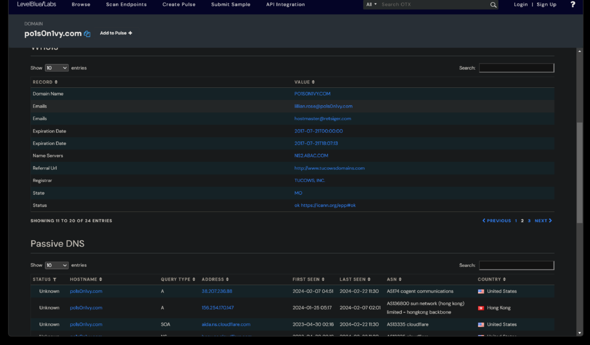

Splunk Incident Response Lab
Keith Brady 1/16/25

Goal
As a SOC analyst using Splunk (or any SIEM), understanding attackers' tactics, techniques, and procedures is crucial to effectively defend against potential threats. Incident handling consists of four phases: preparation, detection and analysis, containment and recovery, and post-incident activities. The preparation phase involves readiness measures like defining policies, implementing security controls (e.g., SIEM, EDR), and ensuring skilled personnel are available.
The detection and analysis phase focuses on identifying incidents through alerts and investigating their root causes, often leveraging Splunk’s capabilities for threat detection and analysis. Containment, eradication, and recovery involve isolating infected systems, removing traces of the attack, and restoring control. Finally, post-incident activities emphasize identifying and addressing security gaps, creating new detection rules, and enhancing team training to prevent future attacks.
We will be using the Incident Handling Life Cycle as well as the Lockheed Martin - Cyber Kill Chain method during our analysis to map our attacker(s) activity.
Scenario
"A Big corporate organization Wayne Enterprises has recently faced a cyber-attack where the attackers broke into their network, found their way to their web server, and have successfully defaced their website http://www.imreallynotbatman.com. Their website is now showing the trademark of the attackers with the message YOUR SITE HAS BEEN DEFACED."
In this lab, follow along as we hunt for threats.
The Steps
1. Log into a live Splunk session with Forwarders already setup and actively obtaining metrics. This instance is pulling metrics from Windows IIS Webserver Logs, Sysmon, Windows Registry, Nessus network scanner, Fortigate firewall logs, Suricata IDS logs, and also http/dns/icmp streams.
2. Here we can see the events that occured during the defacement of the website amongst other events.
3. Recon Phase - We will narrow it down using the http stream to determine which IPs were scanning the webserver (192.168.250.70). We find two suspicious IPs and we will dig into more logs to determine what they were trying to enumerate/exfil. We can then see from the logs that the IPs triggered alerts within Suricata related to a CVE (ET WEB_SERVER Possible CVE-2014-6271 Attempt).
3. Exploit Phase - In this phase we are going to determine the exploitation method used by the attacker(s) to compromise the website and deface it. After some initial queries we determine the server is running Joomla CMS and that the attacking IP (23.22.63.114) is using a brute force technique to find the password for the CMS admin account at the URI "/joomla/administrator/index.php". We can then use rex (RegEx) in splunk to isolate which user agents were used in the attack. This showed that the attacker used a python script to automate the brute force attack. Once we searched for just the passwords used, we can see that the IP (40.80.148.42) used a single password to attempt login (batman).

4. Installation Phase - Now that we determined what the attacker did to gain access to the Joomla CMS/Webserver, we will now determine what they did post exploitation. Since we know the webserver is Windows-based, lets look for .exe files. We then find a file named "3791.exe" uploaded by the attack IP (40.80.148.42). To determine if the file was run on the webserver, we will check the server's Windows event logs (sysmon). Sysmon confirms that 3791.exe was execute on the server.
5. Action on Objective Phase - Now lets determine what ended up on the server to pull off the website defacement. After reviewing Suricata, we determine that the 3973.exe program established outbound connections to three IPs likely C2 server(s). After checking the three suspicious IPs (one which is the original attackers IP), we find out that a SQL injection (HTTP.URI.SQL.Injection) was used and that the file named "poisonivy-is-coming-for-you-batman.jpeg" was used to deface the website.
6. Command and Control Phase - Now that we identified where the jpeg was uploaded from, lets determine if we can find the IP of the C2 server the attacker is using. We will check the Fortigate Firewall to determine this. The jpeg file was downloaded from the attack host prankglassinebracket.jumpingcrab.com (23.22.63.114).
*Note about the last 2 phases (Weaponization and Delivery) - The THM lab is now 5 years old and the threat hunting/OSINT sites no longer contain information about the orignal AWS instancences when they were set up as fictitious "attackers" domains. Now all availble information is just referencing Amazon AWS.
7. Weaponization Phase - Now that we have determined the domain associated with the attack via the jpeg upload, we will look further into information about the domain via a threat intelligence sites. We will look for any information like IP addresses/domains/email addresses associated with this domain which could help us know more about this attacker. Robtex.com is the only OSINT site that has any infomation about the lab attacker domain still. Virustotal would have given us information about a sibling domain - www.po1s0n1vy.com.
8. Delivery Phase - See note above* - "Attackers create malware and infect devices to gain initial access or evade defenses and find ways to deliver it through different means. We have identified various IP addresses, domains and Email addresses associated with this adversary. Our task for this lesson would be to use the information we have about the adversary and use various Threat Hunting platforms and OSINT sites to find any malware linked with the adversary."
I was able to use LBL's AlienVault to find more information about the now antiquated attackers domain (www.po1s0n1vy.com). I was also able to find the associated attackers email address - lillian.rose@po1s0n1vy.com.

Links
TryHackMe Room - Splunk201
Lockheed Martin - Cyber Kill Chain
Robtex
VirusTotal
AlienVault
© phrohike.github.io. All rights reserved.